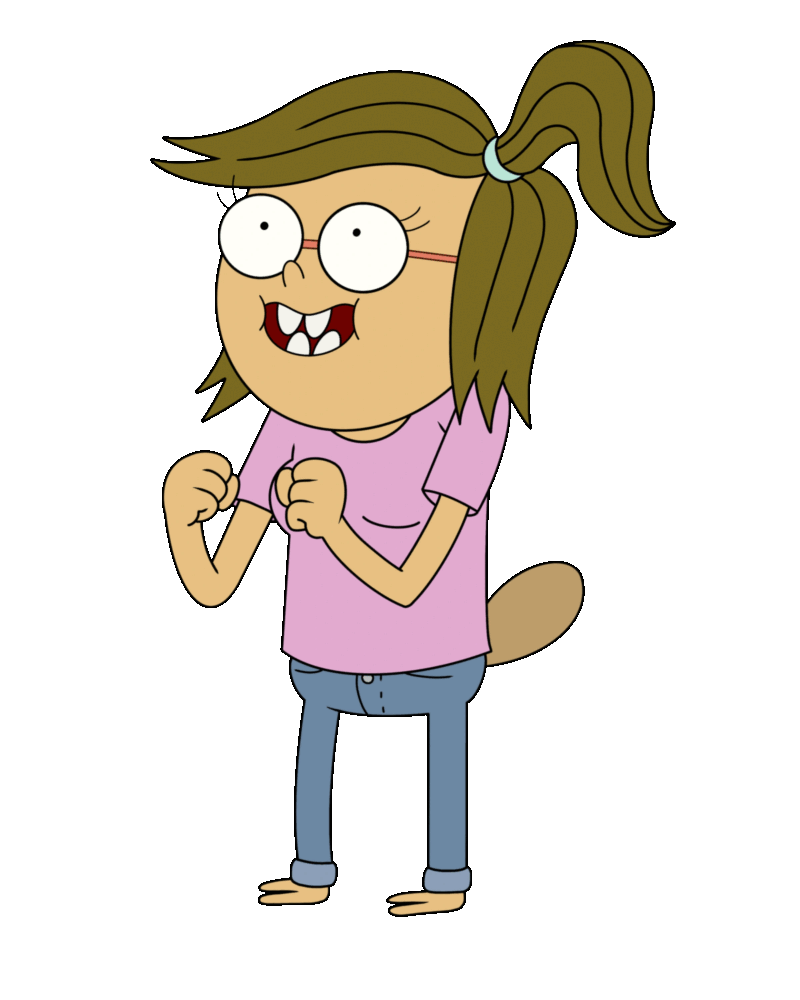

Personaggi Principali
Eileen
Eileen è una talpa che lavora insieme a Margaret come barista. È dolce, intelligente e sviluppa una relazione con Rigby, con il quale si sposa alla fine della serie. Insieme, hanno due figlie.
Eileen
Eileen è una talpa che lavora insieme a Margaret come barista. È dolce, intelligente e sviluppa una relazione con Rigby, con il quale si sposa alla fine della serie. Insieme, hanno due figlie.